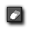
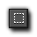

Below you can find a list of all the available drawing tools for
use in the Image Editor.
Pencil
With this tool you can paint on the image, using either the left or the right mouse button (the colours can be set independently) and the size of the area being painted can be set by selecting the one of the sizes from the section beneath the draw tools. If you hold <Shift> when starting to paint you only paint horizontal or vertical lines and if you hold the <Ctrl> key, the cursor temporarily turns into the colour dropper allowing you to select another colour from the image and then continue painting.
Airbrush
With this tool you can "airbrush" paint onto the image. Airbrushing works like the pencil except that the brush is partially transparent at the sides and has a certain texture to it. You can use the left or right mouse button to paint in the different colours you have selected and you can set the size of the brush using the buttons at the bottom. There is also a "hardness" setting for this brush which lets you adjust the transparency of the edges of the lines you paint. As with the pencil tool, if you hold <Shift> when starting to paint you only paint horizontal or vertical lines and if you hold the <Ctrl> key, the cursor temporarily turns into the colour dropper allowing you to select another colour from the image and then continue painting.

Eraser
With this tool you can erase parts the image. It works a lot like the airbrush but erasing what is below the mouse rather than drawing. How much you erase depends on the opacity setting, where a value of 255 will erase completely down to 0 which will erase nothing, with all values in between making the image a bit more transparent. You can also set the hardness of the eraser so that it has softer or harder edges and if you hold <Shift> when you start to spray, you only paint horizontal or vertical lines. Note that you can use the right mouse button on the eraser and it will change the right colour to use the eraser settings, permitting LMB paint / RMB erase, as used in many popular paint programs.
colour Picker
With this tool you can use the left or right mouse button to select the colour directly beneath as the draw colour for that button. Note that the opacity value is also set.
Draw A Line
Use this tool to draw straight lines, with the width of the line set by you in the options below, where you can also choose to have it draw an arrow rather than just a line. By checking Anti-alias the line is drawn with partially transparent pixels on the side to make it appear smoother and if you hold <Shift> when drawing then you can snap to draw horizontal, vertical, or 45° diagonal lines only.
Draw A Polygon
With this tool you can draw a closed polygon. You start by clicking on the position of the first vertex, then you can either drag to the position of the next vertex or just click there, and then continue to add more points until you have the shape you wish to create. You can end the polygon with the <Esc> key or by selecting another tool from the menu. As with the other tools, you can hold <Shift> to draw horizontal, vertical, or 45° diagonal lines and you can set the width of the line and whether the polygon should be filled or not. By checking Anti-alias the polygon is drawn with partially transparent pixels on the side to make it appear smoother.
Draw A Rectangle
Use this tool to draw a rectangle, or, if you hold <Shift>, a square. You can set the width of the outside line and whether the rectangle should be filled or not from the options at the bottom, and by checking Anti-alias the rectangle is drawn with partially transparent pixels on the side to make it appear smoother.
Draw An Ellipse
Use this tool to draw an ellipse, or, if you hold <Shift>, a circle. You can set the width of the outside line and whether the ellipse should be filled or not from the options at the bottom, and by checking Anti-alias the ellipse is drawn with partially transparent pixels on the side to make it appear smoother.

Select A Region
With this tool you can select a rectangular region for copying, cutting, or moving. The selection is made by clicking a position and dragging the mouse, which will create a rectangular area bounded by a dotted line. This area can then be clicked on again to "pick it up" and move it around the image with the mouse. If you use the right mouse button, then you will get the same effect, only you will have a copy of the selected region. You can extend the current selection by holding the <Shift> key, you can remove parts by holding the <Ctrl> key, you can delete the contents of the selection with the <Del> key, and you can clear the selection using the <Esc> key.
Select With Magic Wand
In this case you make the selection by clicking on a pixel, and all touching pixels with the same colour and within the set tolerance will be selected. You can indicate the tolerance with which to select pixels and whether only the colour or also the transparency value should match from the options beneath the toolbox. As above, you can extend the current selection by holding the <Shift> key, and you can remove parts by holding the <Ctrl> key. Once you have the selection you can manipulate it as explained above.
Select With Brush
With this tool you make the selection by "brushing" with the mouse on the image. You can set the size of the brush using the controls beneath the toolbox, and the selection can be treated as explained for the above tools.
Add Text
Use this to add text to the image. You start by clicking the image and a pop-up window appears in which you can enter the text (you can use the # symbol to insert a newline), and once you press OK the text is put in the image, with a selection box around it. You can now move the text by clicking and dragging it with the mouse. If you wish to change the text, simply click with the right mouse button in the box. You can also change the font and alignment (left justified, right justified or centered) from the options that are beneath the toolbox.
Flood Fill
Click on a point in the image, with either the left or the right mouse button, and all touching pixels with the same colour or within the tolerance setting will be turned into the chosen colour. You can set the tolerance with which the colour should match from the settings beneath the toolbox, and you can also set whether to only match on the colour value or also take the transparency value into account too. Note that when the colour Mode is set to Blend the fill colour is blended with the existing one, and to replace it, set the colour Mode to Replace.
Change colour
When you click with either the left or right mouse button using this tool, all pixels in the image with the same colour or within the set tolerance will be turned into the new colour. You can set the tolerance with which the colour should match from the settings beneath the toolbox, and you can also set whether to only match on the colour value or also take the transparency value into account too. Note that when the colour Mode is set to Blend the fill colour is blended with the existing one, and to replace it, set the colour Mode to Replace.